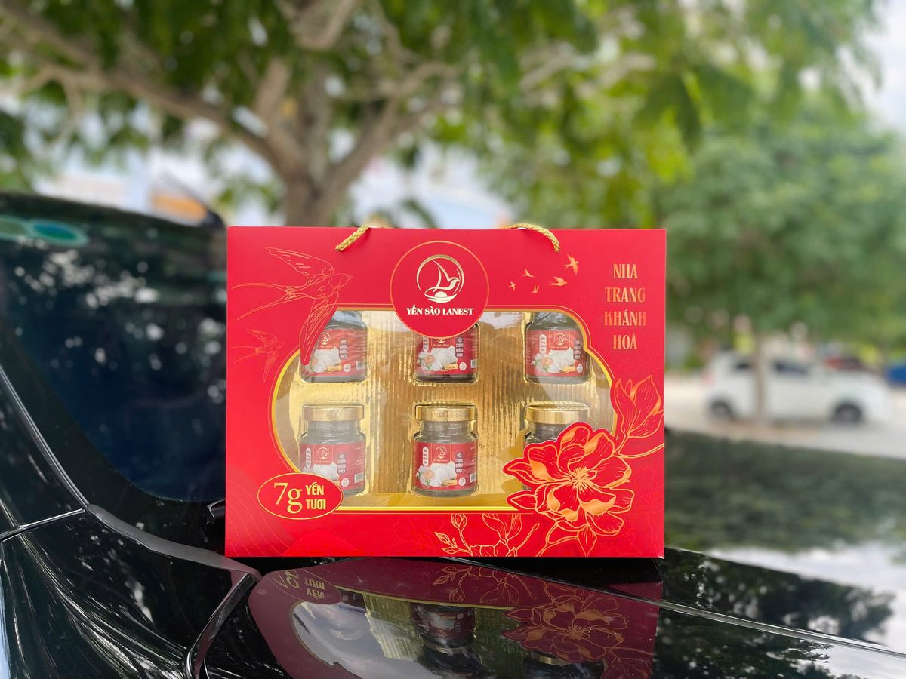
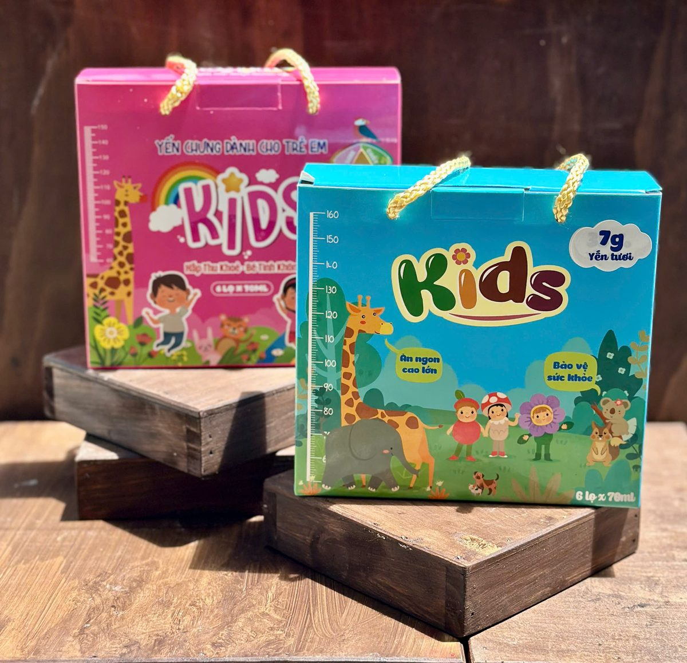

Quà Tết Yến Sào Cho Gia Đình: Chọn Dòng Nào Cho Ông Bà, Cha Mẹ, Các Cháu
Yến Sào Lanest · Đăng ngày 16/11/2026

Quà Tết mang về nhà khác quà biếu đối tác ở chỗ: người nhận là người mình thương, và mình biết khá rõ ai ăn được gì. Chọn quà Tết yến sào cho gia đình vì vậy nên bắt đầu từ người dùng, chứ không phải từ cái hộp. Bài này gợi ý dòng yến và vị yến hợp với từng người trong nhà, dựa trên đúng những sản phẩm Lanest đang có.
Hộp quà đỏ 6 hũ yến chưng 7g yến tươi, có cửa sổ nhìn thấy hũ và quai xách
1. Mang yến về nhà ăn Tết: có những lựa chọn nào?
Quà cho gia đình thường gọn trong ba nhóm sản phẩm:
| Dòng | Đặc điểm | Hợp khi |
| Yến hũ chưng 7g yến tươi (14 vị) | Hũ 70ml, mở nắp là dùng; đóng hộp đỏ 6 hoặc 10 hũ, hộp xanh 6, 8 hoặc 10 hũ | Nhà đông người, muốn mỗi người một vị |
| Yến hũ nguyên chất 100% | Mỗi hũ 1,5g tổ yến (tương đương 15g yến tươi); 3 vị đường phèn, đông trùng hạ thảo, gừng | Muốn phần quà đậm yến hơn cho ông bà, cha mẹ |
| Hộp trẻ em 6 hũ | Yến chưng dành cho trẻ em, hộp in hình vui mắt | Nhà có cháu nhỏ |
| Yến tinh chế hộp 50g, 100g | Tổ yến đã làm sạch, hộp hút ẩm, về nhà tự ngâm và chưng | Nhà có người quen tự nấu yến |
Lanest thường xuyên làm mới mẫu hộp, nên mẫu mùa Tết có thể khác ảnh. Anh chị nhắn trước để xem mẫu đang có. Danh sách đầy đủ các set quà có trong bài gợi ý chọn set quà biếu yến sào.
2. Quà Tết biếu ông bà: tiện, nhẹ vị, đều đặn
Ông bà lớn tuổi thường ngại bếp núc, nên yến hũ chưng sẵn là lựa chọn dễ nhất: mở nắp là dùng, không phải ngâm hay chưng. Vài gợi ý vị theo bản mô tả sản phẩm của Lanest:
- Hạt sen: gợi ý cho người lớn tuổi, người khó ngủ.
- Gừng: cho người hay lạnh bụng, người lớn tuổi.
- Đông trùng hạ thảo: cho người cần bồi bổ, người lớn tuổi.
- Đường phèn: vị nguyên bản, dễ dùng nhất khi chưa rõ ông bà thích gì.
Muốn phần quà đậm yến hơn, chọn hũ nguyên chất 100%: lượng yến mỗi hũ nhiều gấp đôi hũ 7g, thành phần chỉ có nước tinh khiết, tổ yến, đường phèn (vị đông trùng có thêm đông trùng hạ thảo, vị gừng có thêm gừng), không chất bảo quản, không phẩm màu.
Khi trao quà, nhớ dặn một câu: người lớn tuổi dùng khoảng 3 lần mỗi tuần là đủ, vào sáng sớm hoặc buổi tối khi bụng nhẹ, không uống ngay sau bữa chính. Đọc thêm bài yến sào cho người cao tuổi.
3. Quà Tết biếu cha mẹ: theo thói quen của từng nhà
- Cha mẹ còn đi làm, hay mệt: hộp phối nhiều vị như táo đỏ, tứ vị, đông trùng hạ thảo để đổi vị trong tuần. Tứ vị (táo đỏ, long nhãn, hạt sen, kỷ tử) được gợi ý cho cả gia đình.
- Mẹ quen tự nấu: yến tinh chế hộp 50g hoặc 100g để mẹ chưng cùng táo đỏ, hạt sen, kỷ tử theo khẩu vị nhà mình. Thích sợi mềm thì chọn sợi non hoặc thượng hạng; thích giòn thì chọn chân yến, so sánh trong bài chân yến và tổ yến.
- Muốn món quà trông trang trọng khi bày trên bàn thờ, bàn khách ngày Tết: hộp đỏ 10 hũ hoặc hộp xanh 10 hũ, kèm túi xách.
4. Người trong nhà cần hạn chế đường
Tết là lúc bánh mứt nhiều, nên với người đang kiểm soát đường huyết, anh chị nhờ phối vào hộp hai vị dùng đường Isomalt thay đường phèn: đường ăn kiêng và đông trùng hạ thảo ăn kiêng. Cả hai đều được gợi ý cho người ăn kiêng, người kiểm soát đường huyết và người lớn tuổi.
Yến là thực phẩm bồi bổ. Sản phẩm này không phải là thuốc và không có tác dụng thay thế thuốc chữa bệnh. Người đang điều trị bệnh hoặc đang mang thai nên hỏi ý kiến bác sĩ trước khi dùng thường xuyên. Xem thêm bài yến sào cho người tiểu đường.
5. Quà cho các cháu nhỏ
Nhà có cháu thì thêm một hộp trẻ em 6 hũ, để Tết bé cũng có phần riêng. Dòng trẻ em có vị nguyên bản và vị dâu, Lanest giới thiệu cho bé từ 3 tuổi trở lên; bé có cơ địa đặc biệt thì ba mẹ hỏi bác sĩ trước. Cách cho bé dùng có trong bài yến sào cho trẻ em.

Hộp yến chưng dành cho trẻ em 6 hũ, hai màu hồng và xanh, có quai xách
6. Gửi quà về quê và dặn người nhà bảo quản
- Đặt hàng qua hotline 0258 6278 627, fanpage Yến Sào Lanest, website lanest.com.vn hoặc đại lý gần nhất. Gửi tên sản phẩm, số lượng, cách phối vị, họ tên, số điện thoại và địa chỉ người nhận. Muốn gửi kèm lời chúc thì xin thêm thiệp chúc; cần tặng lẻ từng hũ thì có vỏ hộp rời 1 hũ.
- Thời gian giao: nhân viên xác nhận đơn trong vòng 12 giờ làm việc; hàng giao toàn quốc, mất 1–5 ngày tùy khu vực. Mùa Tết đơn nhiều, nên đặt sớm để quà về kịp ngày sum họp.
- Kiểm hàng khi nhận: đơn thu tiền khi nhận hàng được kiểm trước khi trả tiền: tem niêm phong, số lượng, hạn sử dụng, bao bì. Hũ vỡ, rò rỉ hay giao sai thì đổi trong 15 ngày; nên quay video lúc mở thùng.
- Dặn bảo quản: yến hũ để nơi khô ráo, thoáng mát; lắc nhẹ trước khi uống, uống lạnh ngon hơn; đã mở nắp thì cất lạnh và dùng sớm. Hạn dùng in trên bao bì. Yến tinh chế sau khi mở hộp đậy kín, dùng trong vòng 6 tháng. Chi tiết trong bài bảo quản yến hũ chưng sẵn.
Nếu anh chị cũng đang lo quà cho công ty, đối tác, xem bài quà Tết yến sào cho doanh nghiệp.
Câu hỏi thường gặp
Mua quà Tết yến sào cho ông bà nên chọn vị nào?
Chưa rõ ông bà thích gì thì chọn đường phèn. Ông bà khó ngủ chọn hạt sen, hay lạnh bụng chọn gừng, cần hạn chế đường chọn đường ăn kiêng hoặc đông trùng hạ thảo ăn kiêng.
Một hộp có phối được nhiều vị không?
Được. Anh chị báo vị muốn phối khi đặt hàng, mỗi hộp có thể phối một kiểu.
Lanest có gửi quà thẳng về quê cho bố mẹ không?
Có. Anh chị ghi họ tên, số điện thoại, địa chỉ người nhận khi đặt; Lanest giao toàn quốc, 1–5 ngày tùy khu vực. Giá từng mẫu hộp anh chị gọi 0258 6278 627 để được báo.